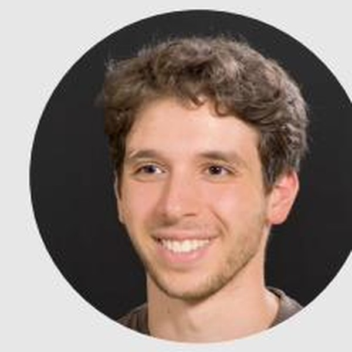

Jul 2026
Adding CMB lensing to the galaxy clustering field-level analysisTalk
DESI collaboration meeting — Primordial Non-Gaussianity working group. Durham, UK.
Slides (PDF)PhD student in cosmology CEA Paris-Saclay · IRFU/DPhP DESI collaboration
I build differentiable simulators that infer cosmology from the whole observed field — not from a summary statistic.

Background: matter density field from a Lagrangian perturbation theory realisation — the first stage of the forward model used in this work.
Research
Galaxy surveys map the cosmic web in three dimensions, and the standard way to analyse them is to compress that map into a power spectrum. The compression is lossy: very different fields can share the same power spectrum, and everything non-Gaussian that gravity built up over billions of years is thrown away.
Field-level inference takes the other route. Instead of compressing the data, it infers the initial density field that evolved into the one we observe, sampling the posterior over millions of parameters at once. Two ingredients make this tractable: a forward model you can differentiate end to end, and a gradient-based sampler that can navigate that space.
My thesis extends this approach to a second probe. Galaxies are biased tracers of matter, while CMB lensing is an unbiased projection of all the matter along the line of sight. Analysing them jointly at the field level breaks degeneracies that neither probe can resolve alone, and sharpens the constraint on local primordial non-Gaussianity — a signature that would tell us how inflation actually worked.
The work is supervised by Étienne Burtin and Arnaud De Mattia at CEA Paris-Saclay, within the DESI collaboration.
Talks & posters
DESI collaboration meeting — Primordial Non-Gaussianity working group. Durham, UK.
Slides (PDF)GDR CoPhy annual meeting, 30 min. Clermont-Ferrand, France.
Slides (PDF)PheniicsFest, annual meeting of ED PHENIICS, Université Paris-Saclay. Orsay, France.
Poster (PDF)Elbereth conference, Institut d'Astrophysique de Paris, 15 min. Paris, France.
DESI collaboration meeting. Tucson, Arizona, USA.
Schools & service
Two weeks. Pornichet, France.
Two weeks, 84 hours: the science of large cosmological surveys. Les Karellis, France.
Three nights as remote Supporting Observer, Mayall 4-m telescope, Kitt Peak.
Code & projects
A differentiable forward model and Bayesian inference pipeline for the joint field-level analysis of galaxy clustering and CMB lensing. Curved-sky light cone, LPT evolution, Born lensing projector, MCLMC sampling on multiple GPUs. Open source, with unit tests, continuous integration and documentation.
An app that turns your daily food and travel choices into a CO2 figure you can actually act on, with a weekly target that adapts as you go. Designed and built solo, published on the App Store. Winner of the Pépite Bourgogne-Franche-Comté idea competition in 2023.
CV & files
Adding CMB lensing to the galaxy clustering field-level analysis.
Download (PDF)Field-level inference for the joint analysis of galaxy clustering and CMB lensing.
Download (PDF)Field-level inference for the joint analysis of galaxy clustering & CMB lensing.
Download (PDF)Contact
I am always happy to talk about field-level inference, differentiable simulators, or anything at the intersection of large-scale structure and the CMB.